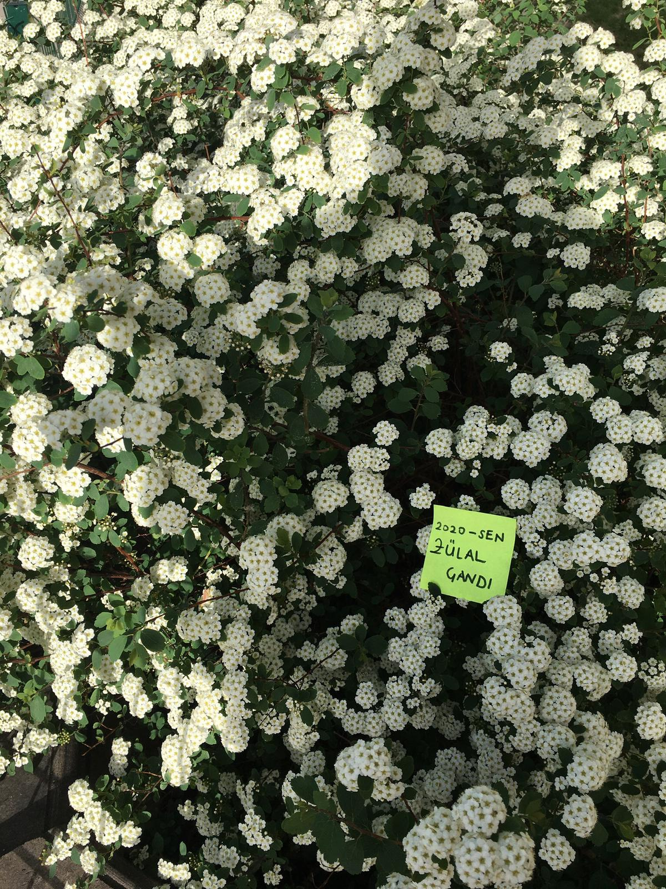

BAZEN ÇİÇEKLERİN AÇTIĞINI GÖRMEK BİLE MUTLULUK SEBEBİDİR
"SEN"İ mutlu etmek için kurduğum siteme HOŞGELDİN
Bu site "SEN"İN İÇİN. Senin için yazıldı her bir satırı.
Seni mutlu etmek, heyecanlandırmak,kendini değerli hissettmen için kuruldu.
Mutluluğu nasıl ararsan daha hızlı bulursun, mutluluk sadece kavramlarla mı olur,nasıl
daha mutlu olurum gibi düşüncelerin varsa cevaplarını bulmaya hazır ol çünkü bu sitede
cevaplarını bulabileceksin.
Arkana yaslan ve bu an'ın tadını çıkar.Ne demiş Paulo Coelho:
"Eğer daima an’a odaklanmayı başarırsan, mutlu bir adam olursun."